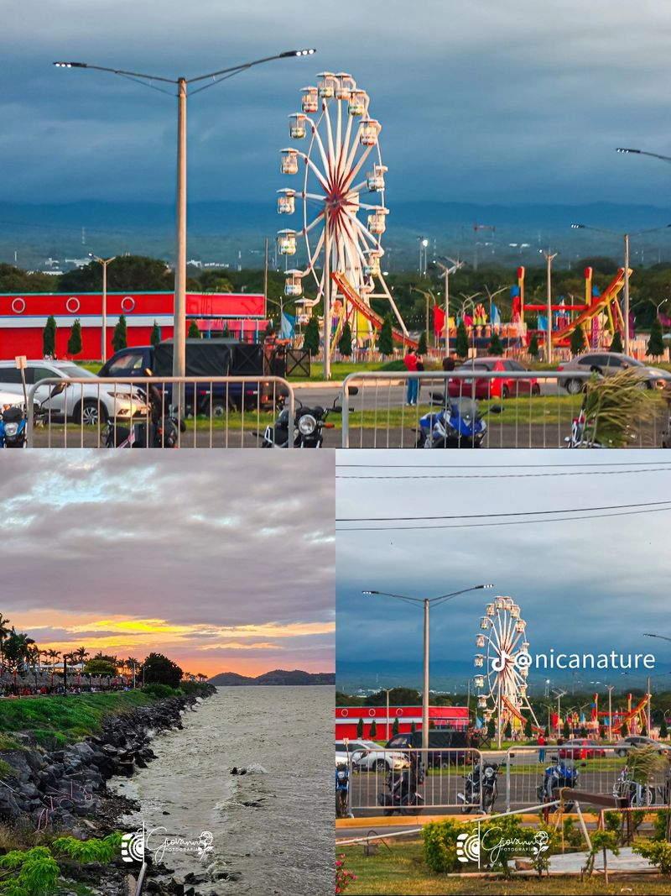
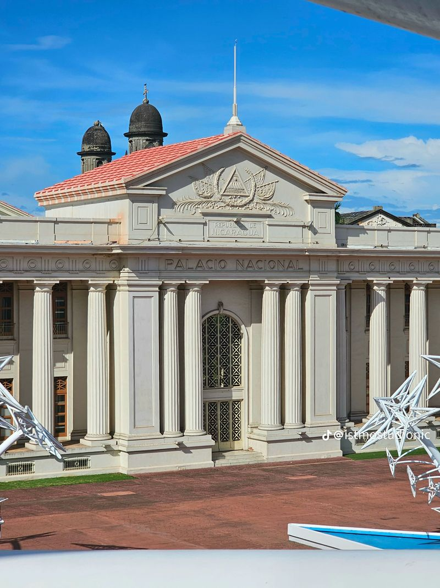

Qué ver
Los horarios y las entradas vienen de guías de viaje sin fecha reciente. Confírmalos antes de ir.






Dónde dormir
Precios de referenciaPrecio desde, por noche, según Kayak en octubre de 2026. Cada precio indica su fecha y cambia según el día. La distancia es a la laguna de Tiscapa, cuando la fuente la da.
-
Ver ubicación en Google Maps
Art Hotel Managua
US$ 30desde · 17–18 oct -
Ver ubicación en Google Maps
Hotel Mozonte
US$ 40desde · 17–18 oct -
Ver ubicación en Google Maps
La Posada del Arcángel
US$ 49desde · 17–18 oct -
Ver ubicación en Google Maps
Los Robles Charming Colonial Boutique Hotel
US$ 95desde · 17–18 oct -
Ver ubicación en Google Maps
Crowne Plaza Managua
US$ 129desde · 17–18 oct -
Ver ubicación en Google Maps
Hilton Princess Managua
US$ 181desde · 24–25 oct -
Ver ubicación en Google Maps
Best Western Las Mercedes Airport
US$ 105desde · 24–25 oct
Dónde comer
Lugares realesCasi ninguna fuente publica precios de platos. Como referencia general, Kayak da unos C$ 209 por una comida rápida y unos C$ 370 por un almuerzo de restaurante con dos platos y postre (octubre de 2026). Los dos precios con "según una reseña" son de clientes. No pude confirmar que todos sigan abiertos: revisa en Google Maps.
-
Cocina de Doña Haydée
Ver ubicación en Google Maps -
Ver ubicación en Google Maps
Quesillos El Pipe
US$ 8quesillo y cacao, según una reseña -
Ver ubicación en Google Maps
Casa Santa Lucía
US$ 10un plato, según una reseña -
El Tiscapa Los Ranchos
Ver ubicación en Google Maps -
Pane e Vino
Ver ubicación en Google Maps -
Malecón y Puerto Salvador Allende
Ver ubicación en Google Maps -
Zona Hippos
Ver ubicación en Google Maps
Cómo llegar en bus
Datos de referenciaManagua no tiene una terminal central: cada destino sale de una terminal distinta. Las tarifas son de 2019 y subieron después. Por ejemplo, la ruta UCA–León pasó de C$ 71 a C$ 78 en 2022. Confirma el precio al abordar.
-
Terminal UCA
Aviso Desde el 21 de julio de 2026 esta terminal se trasladó unos 300 m al sur de los semáforos Rigoberto López Pérez, a cerca de 1 km del sitio anterior, por las obras de la Pista Héroes y Mártires de la Insurrección (La Prensa). Pregunta en la parada antes de salir.- GranadaC$ 20tarifa 2019
- MasayaC$ 12tarifa 2019
- LeónC$ 78tarifa 2022
- Jinotepe y Diriamba (Carazo)C$ 23tarifa 2019
-
Mercado Roberto Huembes
- MasayaC$ 9tarifa 2019
- RivasC$ 40tarifa 2019
- San Jorge (puerto a Ometepe)C$ 40tarifa 2019
- San Juan del SurC$ 55tarifa 2019
- MasatepeC$ 14tarifa 2019
-
Mercado Israel Lewites (El Boer)
- León · expreso o microbúsC$ 71 a 78tarifa 2022
- ChinandegaC$ 40tarifa 2019
- Pochomil (playa)C$ 16tarifa 2019
-
Mercado Mayoreo
- EstelíC$ 60tarifa 2019
- MatagalpaC$ 60tarifa 2019
También salen buses a Jinotega y San Carlos, sin precio publicado.
-
Moverse dentro de Managua
- Bus urbanoC$ 5trayecto corto
- Ruta 110C$ 5
- Taxi
- Desde el aeropuerto
Cómo llegar en carro
A Managua
- Desde León
- unos 90 km · 1 h 30 min
- Desde Granada
- unos 45 km · cerca de 1 h
- Aeropuerto al centro
- 11 km · 20 a 30 min
- Alquiler de carro
- desde C$ 399 al día
Alquiler: Hertz, Alamo, Enterprise y Budget, según Kayak en octubre de 2026. La distancia desde Granada es aproximada.
Direcciones: en Managua muchas calles no tienen nombre y las direcciones se dan por referencias, como "Carretera a Masaya, km 7". Busca cada lugar por su nombre en Google Maps y deja que te guíe.
Síguenos
Videos y fotos de cada departamento en nuestras redes.
Comparte la página
Envía el enlace a quien vaya a viajar.
Otros departamentos
- Masaya · próximamente
- Rivas · próximamente
- Chinandega · próximamente
- Estelí · próximamente
- Matagalpa · próximamente
- Jinotega · próximamente
Fuentes de los datos de Managua
- Kayak: hoteles en Managua (octubre 2026)
- Kayak: hoteles cerca de la laguna de Tiscapa (octubre 2026)
- Kayak: guía de Managua (octubre 2026)
- Frommer's: qué hacer en Managua (sin fecha)
- Frommer's: cómo llegar a Managua (sin fecha)
- Culture Trip: experiencias en Managua
- Wanderlog: restaurantes de Managua
- Nicaragua Travel Guide: terminales de Managua (tarifas de 2019)
- La Prensa: traslado de la terminal UCA (16 de julio de 2026)
- Visit León: de Managua a León en autobús (tarifas hasta diciembre de 2022)
- Confidencial: aumento de tarifas en buses (abril de 2022)
- Airport Transfer Portal: aeropuerto de Managua (julio de 2026)